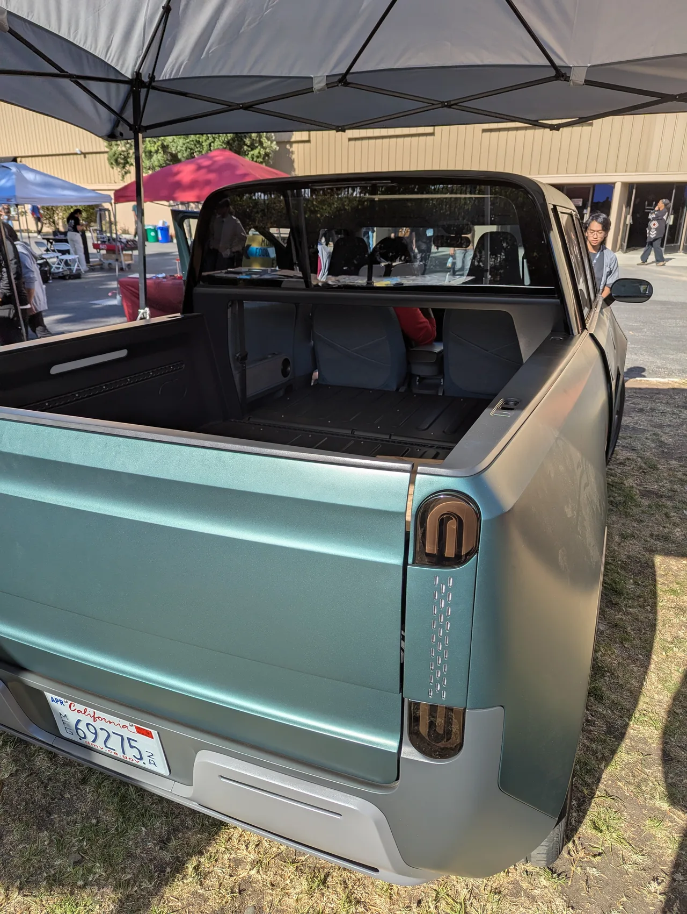
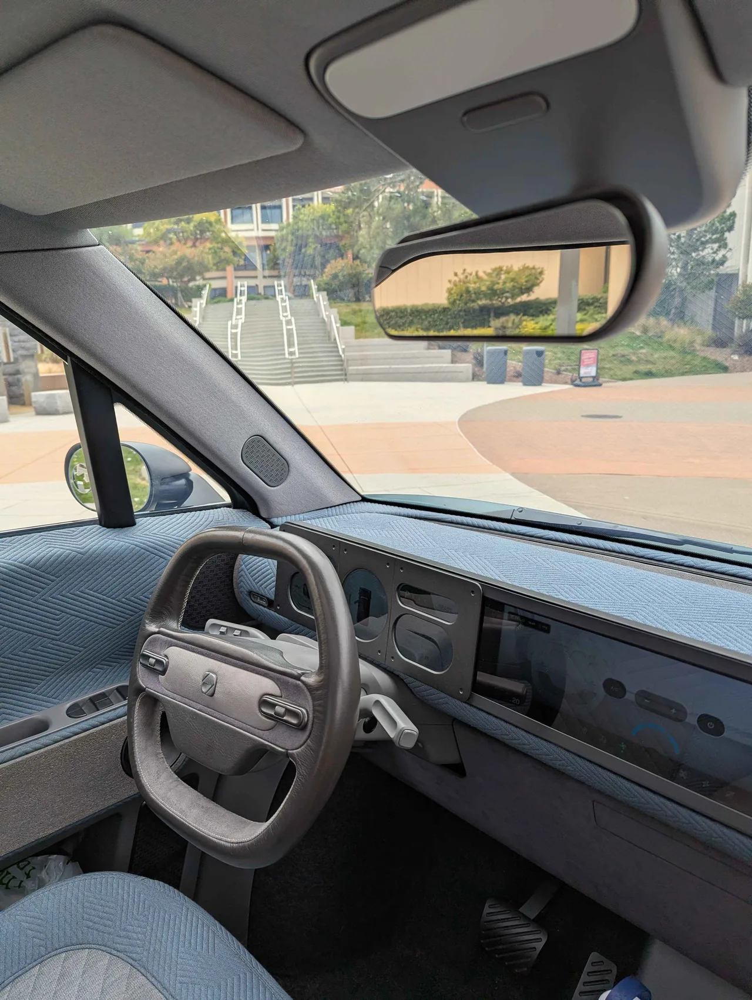

▲ 텔로 MT1 사전 생산 프로토타입 — 전장 3.86m로 미니 쿠퍼와 비슷한 크기지만 픽업트럭의 실용성을 담았다
미국 캘리포니아 스타트업 텔로 트럭스(Telo Trucks)가 소형 전기 픽업 'MT1'의 2호 프로토타입을 로스앤젤레스 행사에서 공개했습니다. 전장은 3,860mm(152인치)로, 미니 쿠퍼와 엇비슷한 크기입니다. 그런데 이 작은 차체로 최대 3,628kg(8,000파운드)까지 견인할 수 있다는 스펙을 내세우고 있습니다. 차량 자체 무게(1,995kg)의 약 1.8배에 달하는 트레일러를 끌 수 있는 셈입니다.
1. 미니 쿠퍼 크기, 어떻게 사이버트럭급 견인력을 냈나
MT1의 전장 3,860mm는 국내에서도 익숙한 미니 쿠퍼(약 3,876mm)와 거의 같은 수준입니다. 도심 주차나 좁은 골목 주행에는 부담이 없는 크기입니다. 그런데 최대 견인력은 3,628kg으로, 테슬라 사이버트럭(약 4,990kg)에는 못 미치지만 웬만한 준중형 SUV보다 높습니다. 짧은 전장 안에 견인력을 극대화하기 위해 휠베이스를 최대한 늘리고, 무게 배분을 견인 성능 중심으로 설계한 것으로 추정됩니다. 작은 차체와 큰 견인력이라는, 언뜻 상충되는 두 가지를 동시에 노린 셈입니다.
2. 5인승인데 적재함까지 — '미드게이트'의 마법
MT1의 실용성은 가변형 구조에서 나옵니다. 기본 적재함 길이는 1,524mm(5피트)지만, 뒷좌석과 적재함 사이의 미드게이트를 개방하면 최대 2,438mm(8피트)까지 늘어납니다. 9피트짜리 서핑보드나 4×8피트 합판도 실을 수 있는 길이입니다. 평소에는 5인승 좌석으로 사용하다가, 짐이 많을 때는 뒷좌석 공간까지 적재함으로 확장하는 구조로, 좁은 전장 안에서 탑승 인원과 적재 용량을 모두 챙기려는 설계 의도가 읽힙니다. 적재함을 덮으면 최대 8명까지 앉을 수 있는 좌석으로도 활용할 수 있다고 소개됩니다.
| 항목 | 기본형(후륜구동) | 상위형(듀얼모터) |
|---|---|---|
| 최고출력 | 약 300마력 | 약 500마력 |
| 구동방식 | 후륜구동 | 사륜구동(듀얼모터) |
| 배터리 | - | 106kWh |
| 주행거리(美 기준) | 418km | 563km |
| 가격 | 4만1,520달러(약 5,800만원) | 약 5만달러부터(약 7,000만원) |

▲ 텔로 MT1 후면부 — 미드게이트를 개방하면 적재함 길이가 1,524mm에서 최대 2,438mm까지 늘어난다
3. 300마력이냐 500마력이냐, 가격 차이는 1,200만원
MT1은 두 가지 트림으로 나뉩니다. 기본형은 후륜구동 단일모터로 약 300마력을 내고 주행거리는 418km, 가격은 4만1,520달러(약 5,800만원)부터 시작합니다. 상위형은 106kWh 배터리와 듀얼모터를 얹어 약 500마력, 사륜구동을 구현하며 미국 기준 주행거리는 563km까지 늘어납니다. 가격은 약 5만달러(약 7,000만원)부터로, 두 트림의 가격 차이는 약 1,200만원 수준입니다. 다만 상위형의 주행거리는 미국 환경보호청(EPA) 공식 인증이 아직 완료되지 않은 자체 추정치라는 점은 감안할 필요가 있습니다.

▲ 텔로 MT1 실내 — 소형 차체에도 5인승 좌석 구성을 갖췄으며, 적재함 확장 시에도 탑승 공간을 확보할 수 있도록 설계됐다
4. 프로토타입에서 양산까지, 아직 남은 숙제
텔로는 이번 행사에서 '기능하는 프로토타입'을 공개했다고 밝혔지만, 이는 아직 정식 양산차가 아닙니다. 회사는 미시간 기반 자동차·항공우주 제조업체 슈왑 인더스트리스와 파트너십을 맺고 양산형 MT1의 차체(Body-in-White) 생산을 추진 중이라고 발표했습니다. 다만 실제 도로 주행이 가능한 완성차로 나오려면 충돌 안전 인증과 양산 설비 구축이라는 큰 산이 남아 있습니다. 스타트업 전기차 업계에서는 프로토타입 공개 이후 실제 양산까지 이어지지 못한 사례가 적지 않았던 만큼, MT1의 '연내 생산' 목표가 실제로 지켜질지는 조금 더 지켜볼 필요가 있습니다.
5. 왜 지금 '작은 픽업'인가
최근 몇 년간 미국 픽업트럭 시장은 사이버트럭·F-150 라이트닝처럼 대형화·고출력화 경쟁이 이어져 왔습니다. 텔로는 정반대 방향을 택했습니다. 도심 주차가 어렵고 연료비 부담이 큰 대형 픽업 대신, 작은 차체로도 실용적인 적재·견인 성능을 갖춘 '도심형 픽업'이라는 틈새를 공략하고 있는 셈입니다. 4만원대 초반 가격이 실제로 지켜진다면, 대형 픽업이 부담스러웠던 소비자층에게는 매력적인 선택지가 될 수 있습니다. 관건은 역시 양산 시점과 실제 주행거리 인증 수치가 발표 스펙에 얼마나 근접할 것인가입니다.